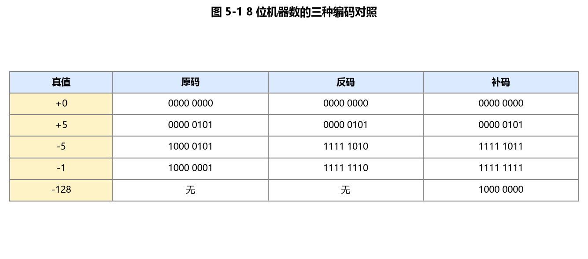
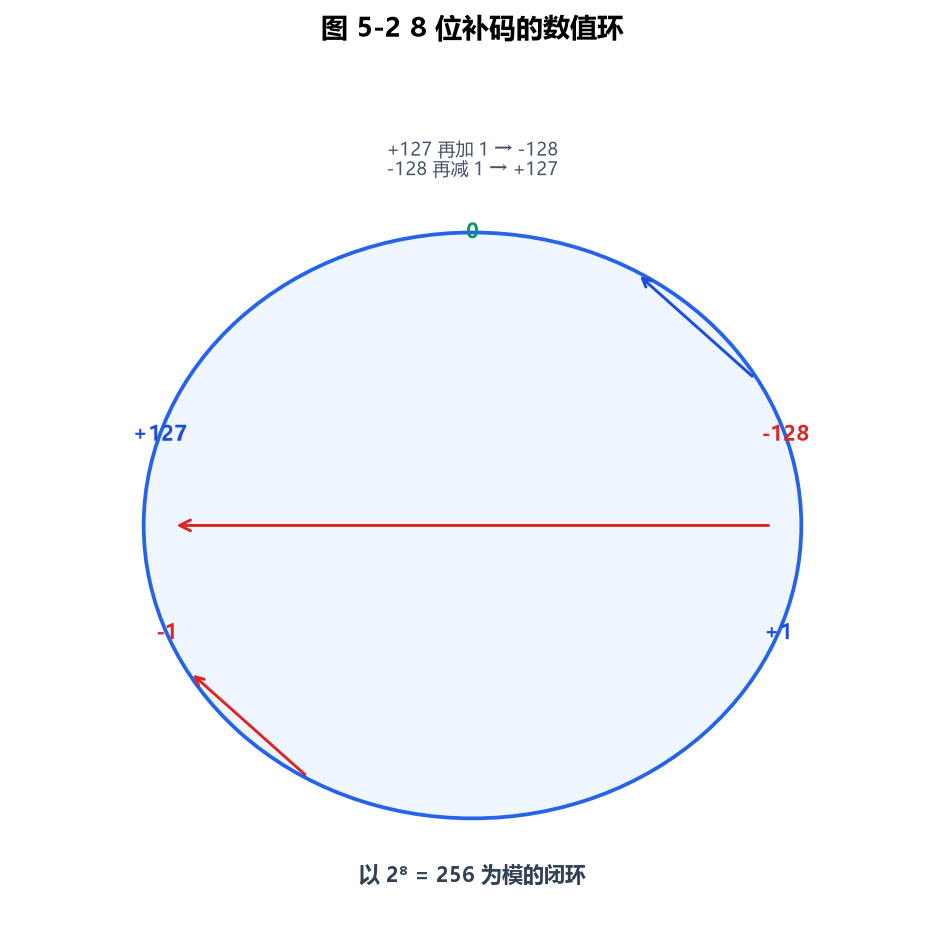
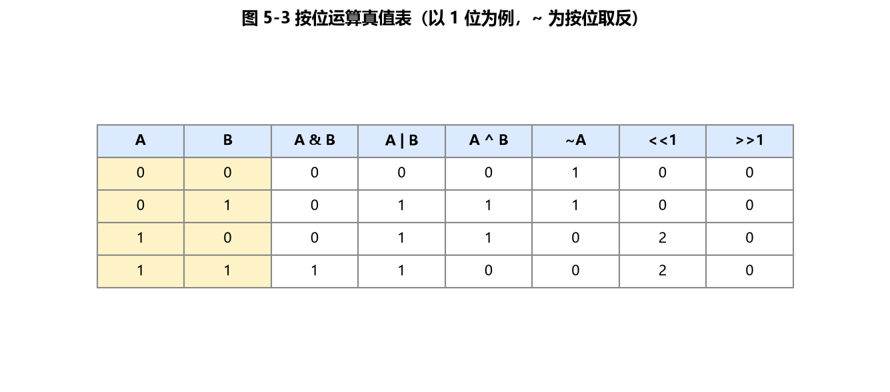

第5章 原码、反码、补码和位运算
位运算是 CSP-S 复赛里性价比最高的工具之一：状态压缩 DP、树状数组、哈希去重、快速幂、图形/棋盘类题目都依赖它。本章先把"数值在机器里怎么存"（原/反/补/移码）讲清楚，再系统整理位运算的语法、技巧与真题模型。每个知识点都配可编译的 C++17 示例。
5.1 机器数与真值
- 真值：现实中带符号的实际数值，如
-5、+12。 - 机器数：计算机里用 0/1 表示、且包含符号位的数。最高位（最左）通常作符号位：
0正、1负。
例：用 8 位表示，
+12的机器数写作00001100，-12的机器数取决于编码方式（见 5.2）。
5.2 原码、反码、补码、移码
设用 n 位（含 1 位符号位）表示一个整数。
| 编码 | 正数（如 +5） | 负数（如 -5） | 说明 |
|---|---|---|---|
| 原码 | 符号位 0 + 绝对值 | 符号位 1 + 绝对值 | 直观，但 0 有两种（+0/-0），减法麻烦 |
| 反码 | 同原码 | 符号位 1 + 各位取反 | 原码到补码的过渡 |
| 补码 | 同原码 | 反码 + 1 | 现代计算机实际采用的方案 |
| 移码 | 真值 + 偏移量 2ⁿ⁻¹ | 同"真值+偏移" | 常用于浮点阶码，便于比较大小 |

图 5-1：原码、反码、补码对照。现代计算机统一使用补码存储有符号整数，0 的表示唯一，减法无需判断符号。
关键结论（务必背）：
- 计算机用补码存储有符号整数，因为补码下加减法统一（无需判断符号），且
0只有一种表示。 - 负数的补码 = 其正数补码逐位取反再加 1。
- 补码求原码：对补码再"取反加 1"（对称操作）。

图 5-2：补码以 2ⁿ 为模构成数值环，+127 再加 1 回绕到 -128，解释了"溢出"的本质。
#include <iostream>
#include <cstdint>
using namespace std;
// 以 8 位二进制形式打印一个整数在内存中的补码
void printBin8(int8_t x) {
uint8_t u = (uint8_t)x; // 直接取内存里的补码位
for (int i = 7; i >= 0; --i)
cout << ((u >> i) & 1);
cout << " ";
}
int main() {
printBin8(5); cout << "(+5 补码)\n"; // 00000101
printBin8(-5); cout << "(-5 补码)\n"; // 11111011 (= 取反加1)
printBin8(0); cout << "(+0 补码)\n"; // 00000000
printBin8(-0); cout << "(-0 补码, 与+0相同)\n"; // 00000000
return 0;
}
验证：
-5的补码11111011= 逐位取反00000101→11111010，再加 1 →11111011。其真值 = -(取反加1 还原) = -5。
5.2.1 移码
移码 = 真值 + 偏移量（常取 2ⁿ⁻¹，n 为位数）。它把"有符号的比较"变成"无符号的大小比较"，所以浮点数的阶码用移码。例如 8 位、偏移 128：真值 -128→0，0→128，+127→255，单调对应，方便硬件比较大小。
5.3 定点数与浮点数的表示范围
5.3.1 定点数（纯整数/纯小数）
n 位有符号补码整数的范围：-2ⁿ⁻¹ ~ 2ⁿ⁻¹ - 1。
- 8 位（char/int8_t）：-128 ~ 127
- 16 位（short）：-32768 ~ 32767
- 32 位（int）：-2³¹ ~ 2³¹-1（约 ±21.4 亿）
易错：正数最大值比负数最小值的绝对值少 1（因为 0 占了正数侧一个位置）。
#include <iostream>
#include <cstdint>
using namespace std;
int main() {
int8_t c = 127; // 8 位有符号最大值
cout << "127 + 1 = " << (int)(int8_t)(c + 1) << "\n"; // -128（溢出回绕！）
// 说明：127 补码 01111111 +1 -> 10000000 = -128（补码里最小负数）
return 0;
}
经典坑：两个正数相加可能溢出成负数（如
127+1=-128），复赛里大数相加要用long long或高精度，别让中间结果溢出int。
5.3.2 浮点数范围
见第4章 4.3：float 约 ±3.4×10³⁸，double 约 ±1.8×10³⁰⁸。注意浮点不能精确表示很多小数。
5.4 位运算（六种基本操作）
C++ 提供六种位运算（操作数按补码的每一位进行）：

图 5-3：按位与、或、异或、非的真值表；左移低位补 0，正数右移高位补 0，负数右移补符号位。
| 运算符 | 名称 | 规则 | 示例（a=12=1100, b=10=1010） |
|---|---|---|---|
& | 按位与 | 同 1 为 1 | 12 & 10 = 8 (1000) |
| ` | ` | 按位或 | 有 1 为 1 |
^ | 按位异或 | 不同为 1 | 12 ^ 10 = 6 (0110) |
~ | 按位取反 | 0↔1 | ~12 低 8 位 = 243 |
<< | 左移 | 左移 k 位×2ᵏ | 12 << 1 = 24 |
>> | 右移 | 右移 k 位÷2ᵏ（算术右移补符号位） | 12 >> 1 = 6 |
#include <iostream>
using namespace std;
int main() {
int a = 12, b = 10; // 1100, 1010
cout << "a & b = " << (a & b) << "\n"; // 8 (1000)
cout << "a | b = " << (a | b) << "\n"; // 14 (1110)
cout << "a ^ b = " << (a ^ b) << "\n"; // 6 (0110)
cout << "~a (低8位) = " << ((~a) & 0xFF) << "\n"; // 243 (11110011)
cout << "a << 1 = " << (a << 1) << "\n"; // 24
cout << "a >> 1 = " << (a >> 1) << "\n"; // 6
return 0;
}
算术右移 vs 逻辑右移：有符号数右移是算术右移（左边补符号位），
(-8) >> 1 = -4；无符号数右移是逻辑右移（补 0）。
5.4.1 异或的三大性质（竞赛高频）
- 自反：
a ^ a = 0 - 恒等：
a ^ 0 = a - 交换律/结合律：
a ^ b ^ c = a ^ (b ^ c)，且可任意交换顺序
用途：不用临时变量交换两数、消去除自身外的重复数据（见 5.5.2）。
5.5 位运算技巧与竞赛模型
5.5.1 lowbit：取最低位的 1（树状数组核心）
x & -x 得到 x 二进制中最低的那一个 1 及其后面的 0（其余位清 0）。这是树状数组（Fenwick Tree）的核心操作。
#include <iostream>
using namespace std;
int lowbit(int x) { return x & -x; } // -x 是 x 的补码取反加1
int main() {
cout << "lowbit(12) = " << lowbit(12) << "\n"; // 12=1100 -> 4(0100)
cout << "lowbit(7) = " << lowbit(7) << "\n"; // 7 =111 -> 1
return 0;
}
5.5.2 消去最低位 1：统计二进制中 1 的个数（Brian Kernighan）
x & (x - 1) 会把 x 最低位的那个 1 变成 0。反复做直到 x 为 0，次数即"1 的个数"。
#include <iostream>
using namespace std;
int countOne(int x) {
int c = 0;
while (x) { x &= (x - 1); ++c; } // 每次消除一个 1
return c;
}
int main() {
cout << "12 的二进制含 1 的个数 = " << countOne(12) << "\n"; // 1100 -> 2
cout << "255 的二进制含 1 的个数 = " << countOne(255) << "\n"; // 11111111 -> 8
return 0;
}
5.5.3 真题：洛谷 P1100 高低位交换
题意：给出一个小于 2³² 的无符号整数，把它的 32 位二进制表示的高 16 位与低 16 位互换后输出。
思路：(n << 16) | (n >> 16)。左移把低 16 位搬到高 16 位，右移把高 16 位搬到低 16 位，或运算合并（两部分互不重叠）。
#include <iostream>
using namespace std;
int main() {
unsigned int n;
if (!(cin >> n)) return 0;
unsigned int ans = (n << 16) | (n >> 16); // 高16位与低16位交换
cout << ans << "\n";
return 0;
}
示例：n = 1（低 16 位为 1，高 16 位为 0）→ 交换后高 16 位为 1、低 16 位为 0 =
1<<16= 65536。
5.5.4 真题：洛谷 P1469 找筷子
题意：n（奇数）根筷子，除了一根落单的，其余都成对出现（每根长度对应一个值）。求落单那根的长度。
思路：利用异或自反性 a ^ a = 0、a ^ 0 = a。把所有数依次异或，成对的互相抵消为 0，最后只剩落单的那个。
#include <iostream>
using namespace std;
int main() {
int n; cin >> n;
int ans = 0, x;
for (int i = 0; i < n; ++i) {
cin >> x;
ans ^= x; // 成对抵消，落单的留下
}
cout << ans << "\n";
return 0;
}
示例：输入
1 1 2 2 3→ 异或过程 1^1^2^2^3 = 3，输出 3。
5.5.5 真题：洛谷 P1226【模板】快速幂
题意：求 aᵇ mod p（b、p 可达 10⁹ 量级），必须用快速幂，否则超时/溢出。
思路：把指数 b 写成二进制，利用 a^(2k) = (aᵏ)²。从低位到高位扫描 b 的每一位：b & 1 判断当前位是否为 1（是就乘进结果），每轮 a = a*a % p，b >>= 1。复杂度 O(log b)。
#include <iostream>
using namespace std;
// 快速幂：a^b % p
long long qpow(long long a, long long b, long long p) {
long long res = 1 % p;
a %= p;
while (b) {
if (b & 1) res = res * a % p; // 当前二进制位为 1，乘上对应幂次
a = a * a % p; // 平方，对应指数翻倍
b >>= 1; // 处理下一位
}
return res;
}
int main() {
long long a, b, p;
cin >> a >> b >> p;
cout << qpow(a, b, p) << "\n";
return 0;
}
验证：3⁵ mod 7 = 243 mod 7 = 5。把 5 写成二进制 101：先累乘 a¹、跳过 a²、再乘 a⁴，即 3¹ × 3⁴ = 3 × 81 = 243。
5.5.6 状态压缩与枚举子集（教学）
当"集合元素 ≤ 20"时，常用一个整数的二进制位表示集合：第 i 位为 1 表示元素 i 在集合中。这就是状态压缩，配合位运算可高效枚举子集。
#include <iostream>
using namespace std;
int main() {
int mask = 0b10110; // 集合 {1,2,4}（位1,2,4为1）
// 枚举 mask 的所有非空子集（含 mask 自身，不含空集）
for (int s = mask; s; s = (s - 1) & mask) {
cout << s << " "; // 输出各子集的整数值（顺序不固定）
}
cout << "\n";
// 加上空集：从 mask 开始直到 0
for (int s = mask; ; s = (s - 1) & mask) {
// 处理子集 s（包含空集 s==0）
if (s == 0) break;
}
return 0;
}
经典模型：TSP、棋盘摆放（如"炮兵阵地"）、状压 DP 的"合法相邻行"。枚举子集的
s = (s-1) & mask是必背句式，能在 O(3ⁿ) 内遍历所有子集。
5.5.7 异或交换（教学，了解即可）
不用临时变量交换 a、b：a ^= b; b ^= a; a ^= b;（利用异或三大性质）。实际工程中直接 swap(a,b) 更清晰，此技巧主要用于理解异或性质与应对某些笔试填空。
5.6 本章小结
- 机器用补码存整数：负数补码 = 正数补码取反加 1；加减统一，0 唯一。
- 表示范围：n 位有符号补码 ∈ [-2ⁿ⁻¹, 2ⁿ⁻¹-1]；8 位为 -128~127，注意溢出回绕。
- 六种位运算：
& | ^ ~ << >>；>>对有符号数是算术右移。 - 必备技巧：
x & -x（lowbit）、x & (x-1)（去最低 1，数 1 的个数）、a ^ b ^ a = b（消重/交换）。 - 真题工具箱：P1100 高低位交换、P1469 找筷子（异或消偶）、P1226 快速幂（位扫描取模）、
(s-1)&mask枚举子集（状压 DP）。
随堂检测（CSP-S 风格）
-
（单选）8 位有符号补码整数的表示范围是（ ）
- A. -127 ~ 127
- B. -128 ~ 127
- C. -128 ~ 128
- D. 0 ~ 255
参考答案
B. -128 ~ 127。
解析（考点）：n 位有符号补码范围为 -2ⁿ⁻¹ ~ 2ⁿ⁻¹-1，n=8 即 -128~127；正数最大比负数最小绝对值少 1（0 占用正数侧一个位置）。
-
（单选）8 位补码中，-5 的二进制表示是（ ）
- A. 10000101
- B. 11111010
- C. 11111011
- D. 10000110
参考答案
C. 11111011。
解析（考点）：+5 = 00000101，取反得 11111010，加 1 得 11111011，即 -5 的补码。
-
（单选）表达式
12 & 10的值是（ ）- A. 8
- B. 14
- C. 6
- D. 12
参考答案
A. 8。
解析（考点）：12=1100、10=1010，按位与同 1 为 1 → 1000 = 8。
-
（单选）
lowbit(12)（即12 & -12）的结果是（ ）- A. 12
- B. 4
- C. 8
- D. 2
参考答案
B. 4。
解析（考点）：12 = 1100，最低位的 1 在第 2 位（值 4），lowbit(12)=4，是树状数组的核心操作。
-
（单选）洛谷 P1226 中，计算
3⁵ mod 7的结果是（ ）- A. 3
- B. 5
- C. 1
- D. 6
参考答案
B. 5。
解析（考点）：3⁵ = 243，243 mod 7 = 5；快速幂把指数按二进制扫描（5=101），乘入 3¹ 与 3⁴ 得 3×81=243。
-
（单选）32 位无符号整数 1 经过"高低 16 位交换"后是（ ）
- A. 1
- B. 256
- C. 65536
- D. 4294967296
参考答案
C. 65536。
解析（考点）：1 的低 16 位为 1、高 16 位为 0；交换后高 16 位为 1、低 16 位为 0 =
1<<16= 65536（见洛谷 P1100）。